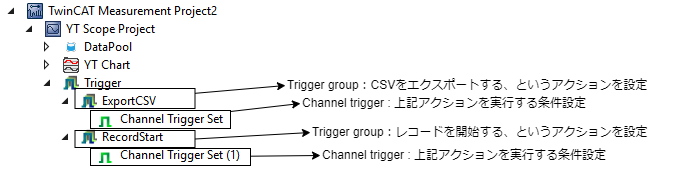
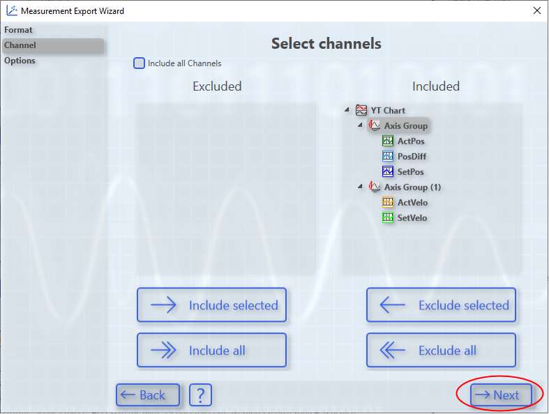
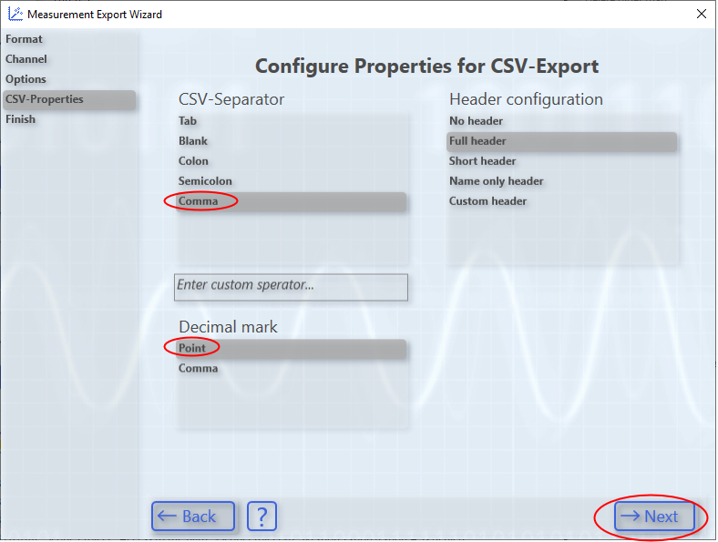
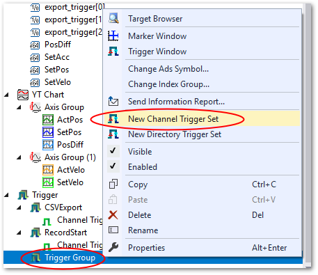

トリガとアクションの設定#
トリガメニューでは、次の二つのアクション実現するトリガを作成します。
RecordStart
モーション軸が動作開始したことを開始して、自動的に記録開始する。
ExportCSV
前回のトリガから溜まったデータをCSVファイルへ保存する。
これら二つのトリガは、図 6.18の様な構造でツリー表示されます。上位階層にTrigger groupと呼ばれるトリガによる具体的なアクション設定を、その子階層にChannel triggerと呼ばれるトリガを発行する条件を設定します。
{kind=link}

図 6.18 トリガ設定のツリーの構成#
まずは、二つのアクションRecordStartと、ExportCSVのTrigger Groupを作成する手順を次項にて説明します。
Trigger Groupの作成#
Triggerを右クリックし、New trigger groupを選択します。Triggerの下にTrigger Groupが出来ます。これに下記の操作を行います。選択してF2キーを押すか、右クリックして
Renameを選択し、Trigger groupから任意のアクションを示す名称へ変更する。例: CSVExport, RecordStart 等
新たに現れた
Trigger Groupメニューを右クリックしてPropertiesを選択。
現れた Properties ウインドウのTrigger Action項目から、アクションを選択する。

StartRecordの場合は、Start Recordを選ぶCSVExportの場合は、Exportを選ぶ
{kind=link}
StartRecordを選択した場合は、特に他に設定する項目はありません。続いてChannel triggerの追加項目へ進んでください。
CSVエクスポートの設定#
Trigger Action にて、Exportを選択した場合は、エクスポートするファイルの情報を設定する必要があります。設定個所は次の2個所です。

Exportpath#
どこへCSVファイルを保存するか、フォルダ名称を指定します。初期値は$ScopeProject$\Trigger Group Exportとなっていて、$ScopeProject$の部分は、Measurement project のルートフォルダのパスを表す変数となっています。
Measurement project のルートフォルダの場所の確認方法は、section_measurement_project_propertyで説明しています。
Export Type#
本フィールドの値入力フィールドにカーソルを合わせると、右端にボタンが現れます。このボタンを押すと、ウィザード形式でExportする書式を設定する事ができます。
次の通りの設定を行ってください。

図 6.19 CSVを選択# |
 図 6.20 記録不要な要素を選択してExcludeで右側へ移動する# |

図 6.21 そのまま次へ# |
 図 6.22 CSV-SeparatorはCommaを、Decimal markはPointを選びます。HeaderはCSVファイルそれぞれに付加されるメタデータの要否を設定します。問題なければFull headerを選びます。# |
{kind=link}
{kind=link}
最後に、確認画面が現れます。問題なければCreateボタンを押すと、設定内容がExport Typeフィールドの値に反映されます。
Channel trigger の追加#
これまでTrigger groupにて設定した二つのアクションを始動する条件は、Channel triggerにて設定します。図 6.23の様にTrigger groupを右クリックして現れるメニューから、New Channel Trigger Setを選びます。
{kind=link}

図 6.23 Channel trigger set の追加#
追加されたChannel Trigger Setを右クリックして現れたメニューからPropertiesを選択すると、 Properties ウィンドウが現れます。
それぞれ次の意味を持ちます。
Combine
同一Trigger group内の他のChannel triggerと条件をどの様に合成するかを設定します。ANDを選択した場合、他のchannel条件がTRUEとなることでトリガが発生します。ORを選択した場合、他のchannel条件と関わりなくトリガを発生することができます。単一channelの場合はどちらでも構いません。
Release
Thresholdの設定値に上昇方向に到達、または超えた場合にトリガを発生させたい場合はRising Edgeを、Thresholdの設定値を下降方向に到達、または超えた場合にトリガを発生させたい場合はFalling Edgeを選択します。
Threshold
User Dataで設定する変数を監視してトリガを発生するための閾値を設定します。
User Data
フィールドの右端のセレクトボタンを押して、DataPoolに登録したトリガ条件の評価対象の変数を選択します。